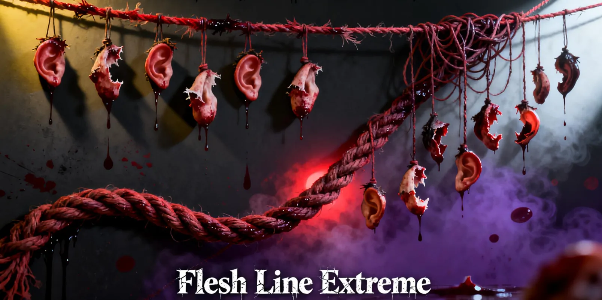
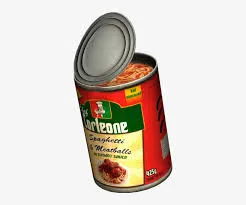

DayZ is a hard game for any beginner, but what happens after the honeymoon phase wears off? Bohemia developed
DayZ, which has turned into a masterpiece over the past 13 years. After enough time and playthroughs on
official or community servers, the runs can start to seem a bit stale, or even boring. Once you know where you
are at all times and exactly how to get your favorite weapons and gear, we can fix that problem. Click on the
server details above to get straight into the action, or continue reading to find out what this server is about.
This server will consume you

Instead of making a community like 95% of the other people, we have dedicated this server to experienced players.
The more experienced players that populate a map, the more challenging the game becomes—giving you that old,
familiar taste of excitement and "what-ifs." It sets an entirely different mood on PvP. This server aims to make
even the most seasoned DayZ veterans question their moves and wonder if they made the right decision, again
and again.Below, we tell you what we have done to make the server harder. DayZ loot has been reduced by a
whopping 75%. You read that correctly: seventy-five percent! We do this to ensure that only the strong and smart
in this world survive.This server is designed to test you and, eventually, break most of you. The best fit for
this community loves a real challenge every single day they play. Weather is set to Eastern Central. Prepare for
the winter, as the ground will freeze; prepare for the true 10-year post-apocalypse, where shoes and clothes will
almost always be rags.
Dynamic Events VS Loot Runs

Food is the priority in any survival game, and we aim to put this at the forefront of our server. Finding food
is the number one fear in Flesh Line Extreme, while PvP is a close second. Weapons remain scattered throughout
the map; we have guaranteed that at least one of every weapon in the game is available.